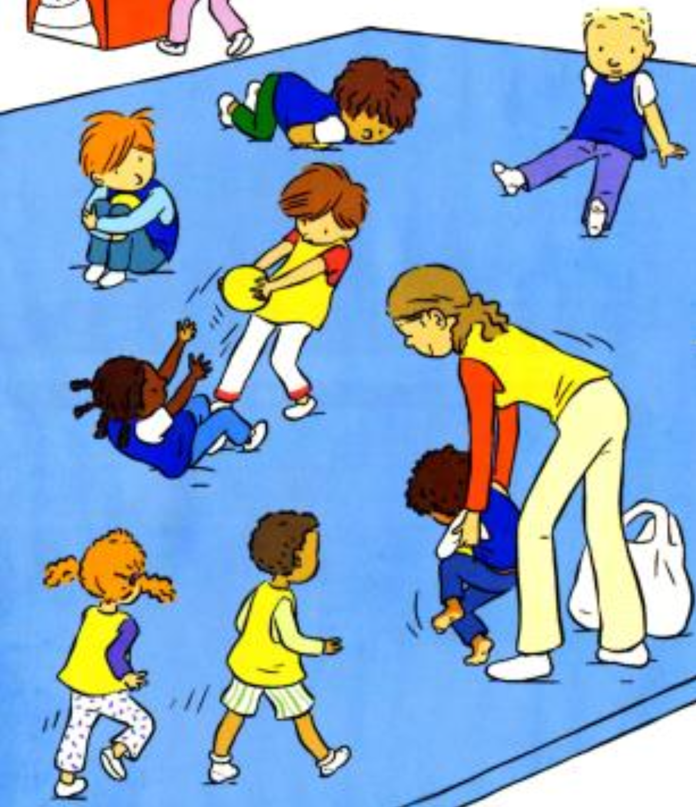

Objectif d'apprentissage
S'opposer directement plus ou moins fortement.
But
Les fourmis doivent protéger les œufs, et les larves doivent s’en emparer pour les ramener dans leur réserve.
Critères de réussite
- Pour les larves : avoir rapporté le plus d’œufs possible dans la réserve.
Règles
- Au signal de début, les larves entrent dans l’espace délimité pour s’emparer des œufs et les ramener dans leur réserve.
- Les fourmis ne peuvent pas se déplacer.
Organisation
Groupes de 3 : les fourmis à genoux protègent les œufs, les larves à genoux tentent de s'en emparer, et un groupe arbitre veille au respect des règles.
Espace de jeu délimité avec des œufs (objets comme des ballons de baudruche) placés au centre.
Modalités d'exécution
- Les fourmis protègent individuellement leurs œufs avec leur corps, les larves tentent de les prendre.
- 2 assauts de 30 secondes avec changement de rôle.
Évolutions
- Les œufs sont disséminés dans l’espace délimité.
- Les larves doivent transporter les œufs vers une réserve éloignée.
- Objets plus faciles à attraper (gros coussins…) pour limiter les contacts physiques.
- Participation du PE en tant que fourmi pour motiver les enfants moins engagés.